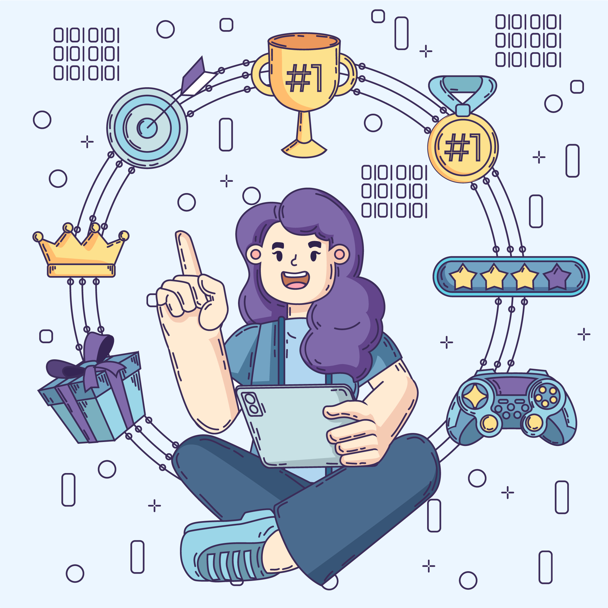

¡Bien! Ya tenemos la lista de la compra. ¿Cuál creéis que será el siguiente paso?
¡Exacto! Es hora de ir al supermercado. Vamos a prepararnos para ello con las siguientes actividades. ¡Adelante!
¡Bien! Ya tenemos la lista de la compra. ¿Cuál creéis que será el siguiente paso?
¡Exacto! Es hora de ir al supermercado. Vamos a prepararnos para ello con las siguientes actividades. ¡Adelante!
.png)
Vamos a visualizar estos videos interactivos que constan de dos capítulos para saber cómo están organizados los alimentos en el supermercado y poder aprender un poco más de ello. Estad atentos porque al final de video el protagonista os hará unas preguntas acerca del visionado que deberemos contestar entre todos.
Episodio 1:
Ahora que sabemos qué pasos seguir para ir al supermercado, gracias a la historia social, y hemos aprendido tanto acerca de los alimentos del supermercado con los videos interactivos, vamos a ponerlo todo en práctica con este fantástico Genially. ¡Seguro que os lo pasaréis genial!
Seguro que os ha encantado este Genially, ¿verdad? Aquí tenéis una página web con una gran cantidad de juegos interactivos con los que podréis seguir practicando.
Imagen diseñada por Freepik (Licencia gratuita)
El equipo de Mastertchef quiere asegurarse de que estáis preparados para salir a comprar al supermercado. Para ello, nos ha comunicado que debéis ver este video interactivo (Edpuzzle) y contestar a las preguntas que en él aparecen. ¡Ánimo, ya os queda muy poco!

¡Ahora sí! Ya estamos listos para ir al supermercado a comprar los ingredientes necesarios para la receta que cada grupo ha elegido. Además, por el camino utilizaremos la aplicación de Google Maps en el móvil de la maestra para saber por dónde debemos ir hasta llegar al supermercado y después, para volver al cole. Suena divertido, ¿verdad?

Obra publicada con Licencia Creative Commons Reconocimiento Compartir igual 4.0